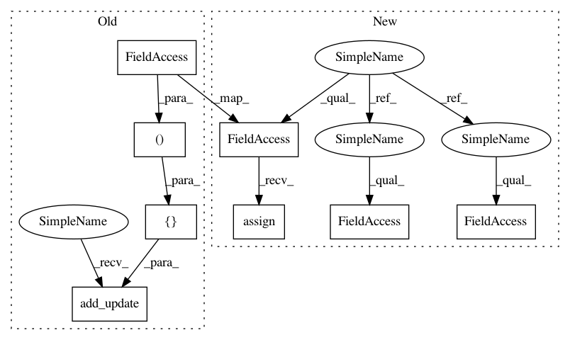

2a64a9d6d97a5c203bd58c0d039eb7e63c07e80f,snntoolbox/simulation/backends/inisim/ttfs.py,SpikeLayer,update_neurons,#SpikeLayer#,67
Before Change
k.ones_like(output_spikes) *
(self.time + self.tau_refrac),
self.refrac_until)
self.add_update([(self.refrac_until, new_refrac)])
if self.spiketrain is not None:
self.add_update([(self.spiketrain, self.time * k.cast(
k.not_equal(output_spikes, 0), k.floatx()))])
After Change
return self.__class__.__name__
def update_neurons(self):
Update neurons according to activation function.
// Update membrane potentials.
new_mem = self.get_new_mem()
// Generate spikes.
if hasattr(self, "activation_str") \
and self.activation_str == "softmax":
output_spikes = self.softmax_activation(new_mem)
else:
output_spikes = self.linear_activation(new_mem)
// Reset membrane potential after spikes.
self.set_reset_mem(new_mem, output_spikes)
// Store refractory period after spikes.
if hasattr(self, "activation_str") \
and self.activation_str == "softmax":
// We do not constrain softmax output neurons.
new_refrac = tf.identity(self.refrac_until)
else:
new_refrac = tf.where(tf.not_equal(output_spikes, 0),
self.time + self.tau_refrac,
self.refrac_until)
self.refrac_until.assign(new_refrac)
if self.spiketrain is not None:
self.spiketrain.assign(self.time * tf.cast(
tf.not_equal(output_spikes, 0), self._floatx))
// Compute post-synaptic potential.
psp = self.get_psp(output_spikes)
return tf.cast(psp, self._floatx)
def linear_activation(self, mem):
Linear activation.
In pattern: SUPERPATTERN
Frequency: 3
Non-data size: 8
Instances
Project Name: NeuromorphicProcessorProject/snn_toolbox
Commit Name: 2a64a9d6d97a5c203bd58c0d039eb7e63c07e80f
Time: 2020-09-28
Author: bodo.rueckauer@gmail.com
File Name: snntoolbox/simulation/backends/inisim/ttfs.py
Class Name: SpikeLayer
Method Name: update_neurons
Project Name: NeuromorphicProcessorProject/snn_toolbox
Commit Name: 2a64a9d6d97a5c203bd58c0d039eb7e63c07e80f
Time: 2020-09-28
Author: bodo.rueckauer@gmail.com
File Name: snntoolbox/simulation/backends/inisim/ttfs.py
Class Name: SpikeLayer
Method Name: update_neurons
Project Name: NeuromorphicProcessorProject/snn_toolbox
Commit Name: 2a64a9d6d97a5c203bd58c0d039eb7e63c07e80f
Time: 2020-09-28
Author: bodo.rueckauer@gmail.com
File Name: snntoolbox/simulation/backends/inisim/ttfs.py
Class Name: SpikeLayer
Method Name: init_membrane_potential
Project Name: NeuromorphicProcessorProject/snn_toolbox
Commit Name: 2a64a9d6d97a5c203bd58c0d039eb7e63c07e80f
Time: 2020-09-28
Author: bodo.rueckauer@gmail.com
File Name: snntoolbox/simulation/backends/inisim/ttfs.py
Class Name: SpikeMaxPooling2D
Method Name: call